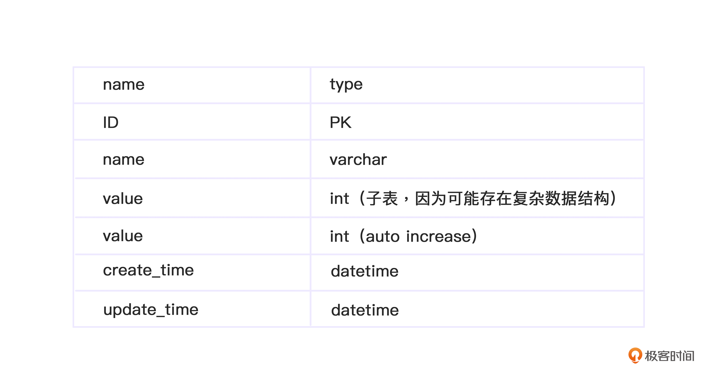
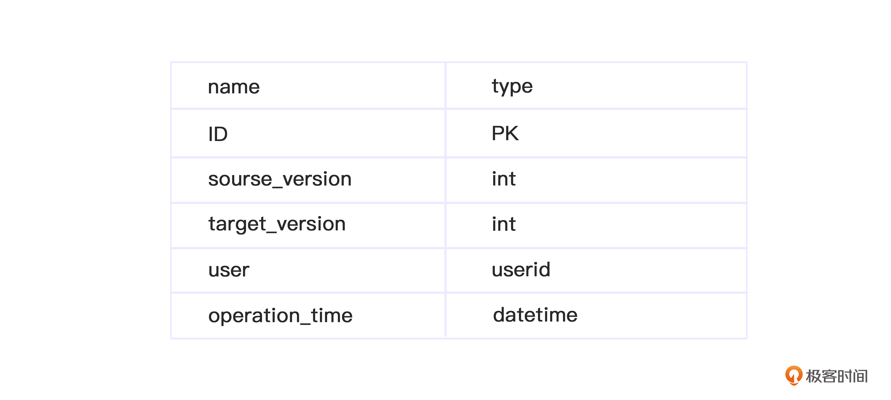
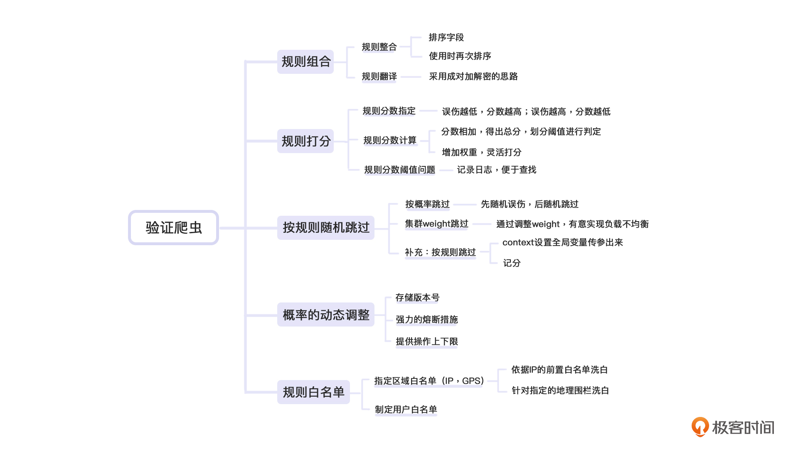

- 00 开篇词 如何突破“爬虫反爬虫”内卷之怪现状？.md.html
- 01 爬虫需求的诞生：我们是正经的软件工程师.md.html
- 02 爬虫的内卷和黑化：我们变得不正经啦.md.html
- 03 反爬虫的发展以及展望：我们也不是什么正经工程师.md.html
- 04 爬虫的首轮攻势：如何低调地拿到自己想要的数据？.md.html
- 05 反爬虫的应对之策：通用且基本的检测规则是什么？.md.html
- 06 爬虫攻势升级：分布式的意义在哪里？.md.html
- 07 反爬虫升级：如何判定你是个真人？.md.html
- 08 博弈的均衡：如何对抗道德的沦丧和人性的扭曲？.md.html
- 09 反爬虫概述（一）：高收益的后端能做哪些基本的事情？.md.html
- 10 反爬虫概述（二）：无收益的前端是怎么进行key处理的呢？.md.html
- 11 反爬虫概述（三）：前端反爬虫是怎么做信息收集的？.md.html
- 12 反爬虫概述（四）：前后端都不合适的时候如何进行处理？.md.html
- 13 反爬虫基础理论：这是唯一一节严肃的纯理论课.md.html
- 14 低耦合：如何快速下线反爬虫系统？.md.html
- 15 规则引擎：如何快速响应突发的爬虫需求？.md.html
- 16 验证爬虫：我到底要不要百分百投入？.md.html
- 17 招聘篇：如何写一个合适的JD？.md.html
- 18 如何搞定老板（上）：如何编造虚无缥缈的OKR？.md.html
- 19 如何搞定老板（中）：如何组建团队.md.html
- 20 如何搞定老板（下）：团队考核怎么做？.md.html
- 加餐 反爬虫的专家级鉴别力：用户习惯检测.md.html
- 春节加餐01 破解还是不破解，这是一个问题.md.html
- 春节加餐02 真实世界里，小心屠龙勇士变恶龙.md.html
- 春节加餐03 低调驶得万年船.md.html
- 答疑课堂 爬虫反爬虫调试对抗技巧以及虚拟机详解.md.html
- 结束语 达到理想不太易.md.html
- 捐赠
16 验证爬虫：我到底要不要百分百投入？
你好，我是DS Hunter，反爬虫专家，又见面了。
前面，我们讲了反爬虫的前置操作，例如快速下线的保命技巧，key生成的相关知识。那么这一讲，我们就谈谈反爬虫最终的核心诉求：验证爬虫。
实际上，在上一讲的规则引擎里面，我们已经对爬虫做了一些验证操作。但是，那里的验证只是简单的规则校验，还属于比较初级的校验。高级校验就要考虑得更多一些。
两者之间有什么不同呢？我们可以试试用不同的英文单词来区分两者。上一讲的验证，更多是validate，而这一讲，则更多是test or confirm。也就是说，这一讲的验证，并非单纯的校验客观上是否符合某种规定，更多的是检测、确认主观上是否是我们想要的。
那我们直接从规则组合的部分开始吧。
规则组合
相信现在的你已经知道了，规则引擎是由多个规则构成的。而这些规则较为通用，并不是针对指定场景的。因此，针对不同的场景，我们可以对规则进行组合使用。这里，我们要讨论的就是组合过程中需要注意的地方。
例如，价格页面可能会存在对商品ID的判定，但是通用促销页面则可能是判定用户属性，他们使用的规则会有所不同。价格页面用A和B的组合，促销页面用B和C的组合。这就像游戏中，每个装备都有自己的属性以及作用。而不同的玩家根据自己的需要，会对装备进行组合，寻找更匹配自己的“套装”。
规则整合
上一讲我们提到了规则判定本来是策略模式，但是如果是多条一起判定，就可能成了职责链模式。其实那个时候就已经开始使用这种整合思想了。
职责链就相当于把职责串联成一个链条，让规则顺着链条走下去，最后走出结果。
我们抄一下上一讲的代码：
interface IContext;
interface IRuleResult;
interface IRule{
IRuleResult Check(IContext context);
}
具体实现我们就不摘抄了。我们假设你为当前的场景配置了四个不同的规则，分别是Rule1，Rule2，Rule3，Rule4，那么你的判定代码应该是类似这样的：
[Rule1,Rule2,Rule3,Rule4].reduce((prev,rule)=>{
var result = rule.Check(context);
// 如有其余逻辑可以在这里处理
return prev || result;
},false)
通用的判定规则只需要这类简单的代码组合、链式判定即可。注意，这里存在一个问题，如果规则本身有依赖，那么如何处理呢？
可能这里你会困惑：规则依赖是什么？
我来举个例子。假设你现在身上有两个装备，一个描述是：受到攻击，减少伤害5点。另一个是：受到攻击，减少伤害50%。
那么这个时候你收到了100点伤害，真正打到身上的伤害是多少呢？有下面两种情况：
你会发现，很多算法是依赖顺序的，顺序不同就会得到不同的结果。
而职责链要如何解决这个问题呢？我们可以把这个问题分成数据传递和判定顺序两部分来看。
针对第一个问题，context是顺着职责链一路下去的。因此当数据在context上传递的时候，至少数据传递问题我们解决了。而判定顺序，应该是后台配置的。我们读取配置的时候，要顺便读取配置顺序。
可能你会说：我按照写入顺序来做判定不就好了吗。先做的放前面，后做的放后面。
这里存在两个可能改变顺序的地方，一个是数据库，一个是序列化。
我们都知道，规则配置无论如何指定顺序，最终肯定是放在数据库里的，而数据库是基于集合的。如果你依赖写入顺序，很快就会发现，由于数据库默认不保证顺序，你拿出来的数据有时候是基于写入顺序的，有时候不是。因此你一定会指定order by。这个时候，我们就需要一个字段来帮我们做排序。因此，排序字段是必备的。
此外，服务端在序列化的时候，因为很多序列化器也不保证数组顺序，为了避免这种不可预知的问题，我们通常会指定顺序。使用的时候，自己再排一次序，避免发生顺序错乱。
最后，顺序可能经常存在调整。为了调整DB方便，我们也需要指定order字段，方便调整书序。这样，规则整合的问题才能真正得到解决。
规则翻译
规则翻译的主要原因是，我们前端传过来的规则经常会存在加密的情况。
当系统中存在BFF的时候，我们通常把解密模块放在BFF中。第一个原因是BFF比较前置，可以降低后续的服务压力。第二个是BFF大部分是JavaScript做的，而前端也是JavaScript做的加密，这里会比较方便。
如果前端代码是JavaScript加密的，BFF用JavaScript解密，那么又回到了我们成对加解密的思路。因此，存储的时候依然是采用成对加解密的思路即可。这里你也可以参考第10讲的内容。
规则打分
虽然大部分情况下规则可以做成布尔类型，要么通过，要么不通过，但是有的时候，例如真人判定的规则里，我们还加入了打分的概念。也就是说，有些规则即使不通过，也可能不拦截，这要取决于其余规则的得分。这个时候，我们就需要对规则进行加权计算，也就是打分。
不过，单个规则的分数是难以制定的，大部分情况下我们是根据线上的情况进行逐步调整的。例如，根据规则误伤的人数，计算分值。一般说来，误伤越低，分数越高。误伤越高，分数越低。
规则分数计算
规则分数计算与职责链的不同在于，职责链是串行调用，规则分数是并行调用。当然，现实情况中可能是两者共用，例如多个规则并行，每个规则内部有子规则，子规则是串行。不论怎么使用，我们都只需要将分数直接相加，就可以得出总分数，然后再划分阈值进行判定即可。
如果是串行，那么在reduce的过程中可以通过reduce的initvalue串下去，也可以通过context做为全局变量传递下去。initvalue的传递，定义域被限定在了当前reduce内，也就是隔离性比较好。如果用context，可以实现跨规则的记分，灵活性很强，但是隔离性较差，影响调试。
但是，我们依然需要对每个规则增加一个权重，这样可以实现更灵活的打分。
可能你会觉得奇怪：老师，我们已经给不同规则定出不同的分数了，为什么还要给出个权重呢？如果一个规则是10分，权重为1，这和“给5分，权重为2”，没有区别啊？
是的，针对单个规则在单个场景下的使用，是没有区别的。但是我们的规则如果跨场景呢？
例如校验Cookie，可能是一个10分的规则。但是对于订单规则，他希望自己把这个规则提升得更重要一些。这时候如果他把规则提升到20分，但是其余的规则使用方不同意，他们依然想用10分呢？
这个时候有两种做法，一种是覆盖分数，也就是自己重新定义一个分数“20”，不用默认的10分。还一种是保持10分不变，增加一个2的权重。
大部分情况下，我们会选择第二种方法，因为这个在视觉上更直观，计算也更加方便。你一看到权重2，就知道这个规则的重要性翻倍了。但是，如果使用重定义分数的办法，等你查找哪个规则导致分数不对的时候，发现满篇都是各种分数，还要查看原始分数才知道当时是调高了还是调低了。这会严重拖慢调整策略的速度。
规则分数阈值问题
规则分数的阈值就是一个判断，这个没有任何技术含量。
但是，这里需要注意的是：当误伤了用户，用户来投诉的时候，你如何知道当时用户得分多少，阈值多少，如何被误伤呢？
这里就再次遇到了日志问题。
再强调一次：只要存储成本顶得住，反爬记再多的日志都不嫌多。考虑到阈值变更其实是一个很低频的事情，因此其实并不需要完整记下来当前阈值，记录时间等等完整信息，我们可以只记录ID，后续用ID去串联。
例如，阈值变更，在配置系统是有历史的，那么只需要记录当前的版本号即可。此外，用户当前分数，也不一定非要记录，尤其是记录分数可能会导致记录分数计算过程。这个时候可以记录当前规则信息——规则配置系统也应该是有版本号的。有了所有的匹配之后，那么在排障的时候，可以重算分数。这样就避开了存储问题，时间换空间。
按规则随机跳过
我们前面提到过，随机跳过有两种，一种是计算概率，一种是按照集群weight来设置。我们先看直接计算概率的办法。
按概率跳过
按概率跳过，首先要明确需求：是按总人数计算概率，还是在爬虫里计算概率？
通常我们说“跳过”的时候，都是在爬虫里计算。而随机误伤的时候，则是在总人数里随机。
为什么这么说呢？一方面，我们谈“跳过”，指的是明明它是爬虫，我们依然要放过它。因此，这个操作应该是“爬虫中”进行。另一方面，我们谈“随机误伤”，指的是不管是不是普通用户，我们都要误伤一下。因此，这个操作应该是在“总用户”进行。
有了这两个分析之后，我们就能发现，跳过是在爬虫上操作，也就是要先判定，再根据判定结果来进行操作。而随机误伤，不用关心反爬状态，因此不需要判定是否是爬虫，可以在前置做短路操作。
需求明确后， 后续就简单了。 大概代码如下：
var alive = 0.791; // 通用跳过概率
var death = 0.0001;// 通用随机误伤概率
if(Math.random() < deadth){
reutrn false;// 无脑误伤用户，不再判定
}
// 上面是前置操作，如果进入，已经直接return，无需再判定爬虫
var result = Rules.check(context);// 假定判断结果在result里面。true为爬虫。
// 下面是后置操作，如果进入，则判定是否随机跳过，不跳过则正常走，跳过就认为是正常用户
if(result && Math.random() > threshold){
// 超出随机跳过范围
returne false; // 的确是爬虫
}
else{
reutrn true;// 是普通用户。也可以直接短路操作!(result && (Math.random > threshold))
}
这样，通过前置和后置的两种方式，就避免了频繁计算概率，并且符合需求。
集群weight跳过
集群weight跳过，在前文提到过。因为集群本身在Nginx上做了随机，因此其实只需要关闭部分机器的验证功能，就等效于部分跳过。
前面我提过一个问题：对于一些不工整的随机概率，我们用什么方法来设置weight比较合适呢？
你可能还记得79.4%这个诡异的数字，但其实这个问题是有陷阱的。正确的思路是：集群weight只能做为快速变更的辅助，不建议用于常规功能。因为机器数是整数，只能实现一些工整的概率。如果要实现不工整的概率，例如79.4%这种，必然会导致调整weight的负载不均衡。
因此，调整weight，有意负载不均衡，来实现随机跳过，一般是在来不及发布的时候使用的权宜之计，并非主力做法，你也不必过于依赖79.4这个数字。必要的时候，你可以向上或者向下取一个工整的值。
补充：按规则跳过
按规则跳过的操作相对少见，一般要么是单纯是想把水搅浑，要么就是测试规则与正式规则混合部署，希望能够直接在战场演习。这类需求虽然不建议接，但是一旦有了，我们也有办法处理。具体方案有两个：
第一种方案，context设置全局变量传参出来。
因为context是唯一一个贯穿整个链路的变量，因此如果某个规则需要变更结果，只能通过这个方式通知其余人。这里面context相当于一个总线，我们在总线上进行广播，其余规则收到广播后，可以正常跑，然后结尾再判定context的信号进行强制改判定。
这样代码比较简单，但是效率较低，因为rule全跑了。当然，你也可以选择在context总线上有了信号之后所有Rule直接熔断跳过不判定，这样的好处是效率高，缺点是代码变复杂。不过如果基类实现这个通用功能，能稍好一些。
第二种方案，记分。
简单的说就是给出评分的时候，不直接给出总分，而是分别给出各个位置的分数。然后结尾再判定的时候，如果跳过规则的分数已经给出了指定值，那么直接强制不判定分数，或者强制降分到0，能跳过所有的阈值。你也可以把它想成一票否决权的感觉。
概率的动态调整
在上面讲解过那么多的“随机”之后，你会发现，无论是随机跳过还是随机误伤，都有可能根据情况实时调整。因此，它还需要有一个配置系统。
随机跳过的配置系统就是一个简单的Config系统，DB用于持久化存储数据，缓存用于提升读取速度，后台配置页面的create和update用于刷新缓存，定期用Job也刷缓存兜底，基本上就可以了。需要注意的是，前面我们提到过版本号的问题，因此需要特别注意存储版本号。
数据库表demo如下：- 
例如随机误伤的阈值就可以指定一个name，子表存储一个阈值即可。
操作历史表示意：- 
此外，配置系统与规则系统很可能是部署在同一个DB上的，如果DB挂了，会直接存在单点故障。因此，需要有更强力的熔断措施。例如，验证服务器全部拉出，或者SLB断流，直接不提供验证服务，在SDK上设置超时熔断，直接断掉全部反爬虫系统。
最后，为了防止用户误操作，需要提供操作的上下限。例如随机误伤是极低概率，如果不小心设置为0.5，那就是直接误伤一半用户，妥妥的生产事故。因此需要限定为只允许使用小于一定上限的数字。甚至，可以考虑界面上只支持选择，不能自定义。
规则白名单
规则白名单与规则跳过十分接近。只不过，这类规则通常是通用规则，因此可以直接做前置判定，避免运行其余规则，消耗资源。
指定区域白名单（IP，GPS）
反爬虫系统经常碰到这种恼火的事情：有合作伙伴要与自己合作，API来不及开发，或者API数据有问题，所以合作伙伴要走爬虫。虽然很恼火，但是也没什么办法，不得不做。这个时候，我们就可能会根据IP进行前置的白名单洗白。
此外还有一个办法更简单，那就是直接新建一个集群，不部署反爬虫，但是参数需要指定key才能访问。合作伙伴使用指定的key来拉取数据即可。key一旦存在泄密，就需要更换。这样，还可以降低系统压力，避免合作伙伴与线上用户争抢资源。
这里我也给你补充一个主要针对APP爬虫的“GPS白名单”。APP爬虫针对指定的地理围栏可以拉黑，也可以洗白，根据业务需要可以灵活处理。
由于大部分反爬白名单需求实际上在国内（真是一个悲伤的经验），不会牵扯到北极圈之类的地方，因此也可以用经纬度偏移这种更简单的方式，无需计算公里数。在国内，大部分情况下经纬度画出来的矩形还是很接近矩形的。
指定用户白名单
指定用户的白名单则是UID判定。注意这类需求需要前置解决，不能后置，避免修改判定失败，同时前置也能提升效率。最后，白名单用户通常都是VIP用户，例如CEO，股东等等，因此操作过一次之后，最好存储下来。一般说来，你下次还会碰到他。
小结
好了，关于验证爬虫，我们就谈到这里。
这一讲，我们主要看了所有的规则判定方式以及规则的打分方式。
这些规则可以组合使用，同时，为了加密的需求，我们也提到了如何进行规则翻译这件事。而规则的打分，包括如何制定分数，计算分数，以及如何配置阈值等等。相对于改变规则的分数，调整分数权重会显得更加直观，计算也更便捷 。当然，在验证爬虫的过程中，我们有时也需要按规则随机跳过。最后，我们还讨论了各类白名单跳过的两种做法——指定区域和指定用户。

总体来说，前置的判定通常用于拉黑，而后置的判定通常用于洗白。当然这并非绝对的，如与实际需求冲突，还是要仔细分析。
思考题
最后的最后，又到了愉快的思考题时间。还是老规矩，三选一。
- 后置判定可以用于拉黑吗？优缺点分别是什么呢？
- 集群weight会导致复杂不均衡问题因此一般用于应急。那么，如果我们的机器本身就申请配置不均衡能解决这个问题吗？会导致什么新问题吗？
- 产品经理如果提了个需求：在某GPS点，拉黑半径五公里的用户。这个需求是画圆，需要进行计算了，不能无脑判定经纬度了。如何让性能提升呢？
可以把想法写在评论区，让我看看你的奇思妙想。 反爬无定势，也许我也可以在评论区学习到更多的思路！
© 2019 - 2023 Liangliang Lee. Powered by gin and hexo-theme-book.